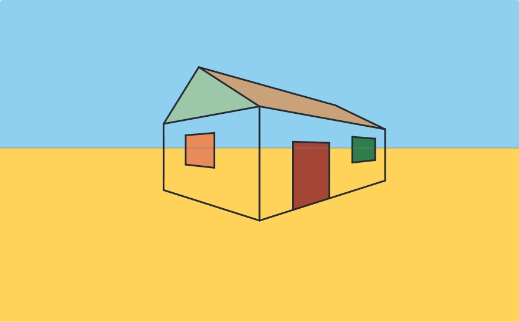
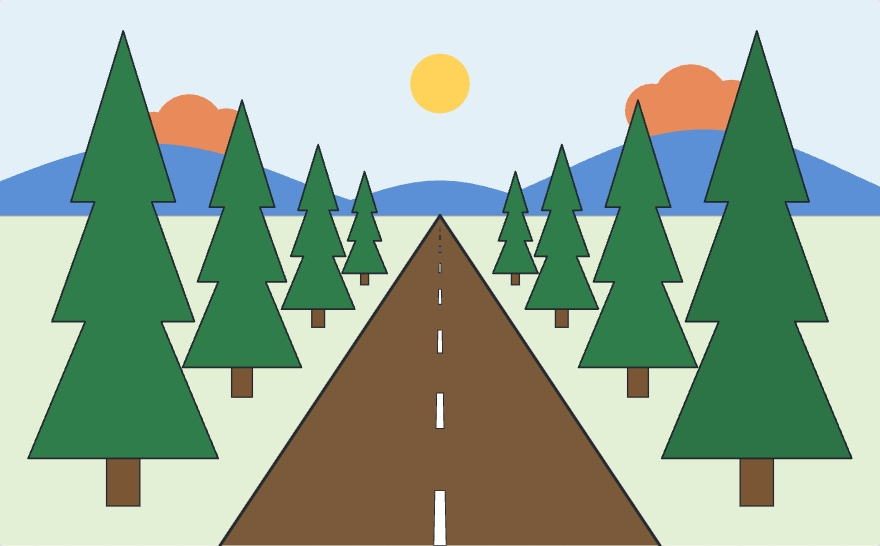
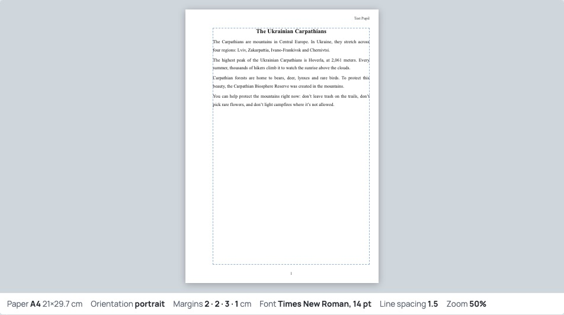
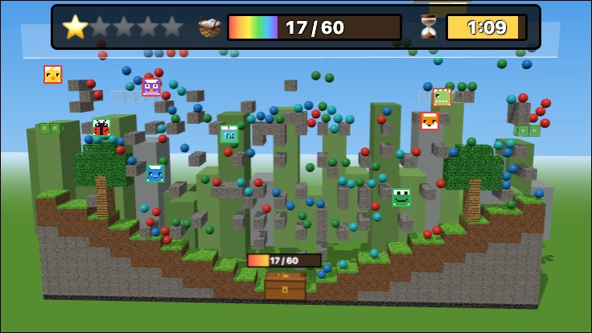

A House in Perspective
Two-point linear perspective. In 8 steps pupils draw the horizon line, place the vanishing points, build the walls, roof, windows and door, clear the guide lines and color the drawing.
“Klasni ihry” is Ukrainian for “cool class games”. These are my first games for my own lessons: pupils learn step by step, earn points for every correct action, and at the end of the lesson the top three get collectible cards. Play right in the browser, or as a whole class with a leaderboard on the projector.

Two-point linear perspective. In 8 steps pupils draw the horizon line, place the vanishing points, build the walls, roof, windows and door, clear the guide lines and color the drawing.

A road into a fir forest with one vanishing point. Besides perspective, pupils stack the picture’s layers from background to foreground, just like the Arrange menu in Google Drawings.

Pupils get a school report ready to print: choose paper size and orientation, set margins, font and line spacing, format the title, add a header and a footer with the page number, then preview and print.

One shared block world for the whole class. Each child picks an animal and plays from a tablet. The Collectors fill a chest with balls together while the Troublemakers build obstacles. Five levels, a 3D world on the projector, and teams reshuffle every level. Kids play with icons only, so it works in any language.
Click “Play” next to a game. Nothing to install. The name, selfie and progress stay in this browser only and are never sent anywhere. Great for revising at home or working through a lesson independently.
The teacher’s laptop becomes the class server. Pupils see a shared leaderboard, and the projector shows the standings, a lesson timer and an award ceremony for the top three.
klas folder, start the game you want: python3 landscape-server.py (or house-, format-, kulky-server.py). All you need is Python 3; no internet required.http://192.168.1.10:8000.http://localhost:8000/board.For now the class kit (teacher server and projector board) is in Ukrainian; an English version is on the way. Kulkosvit only runs in class mode, because all the children play in one world.
The games are licensed under Creative Commons Attribution-NonCommercial-ShareAlike 4.0 International (CC BY-NC-SA 4.0). The full text is in LICENSE, with a plain-language summary in LICENSING.md. For a commercial license, get in touch via GitHub.